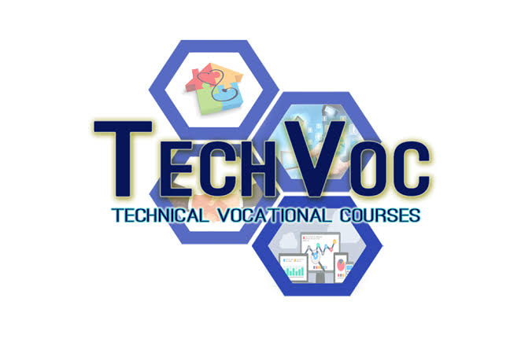
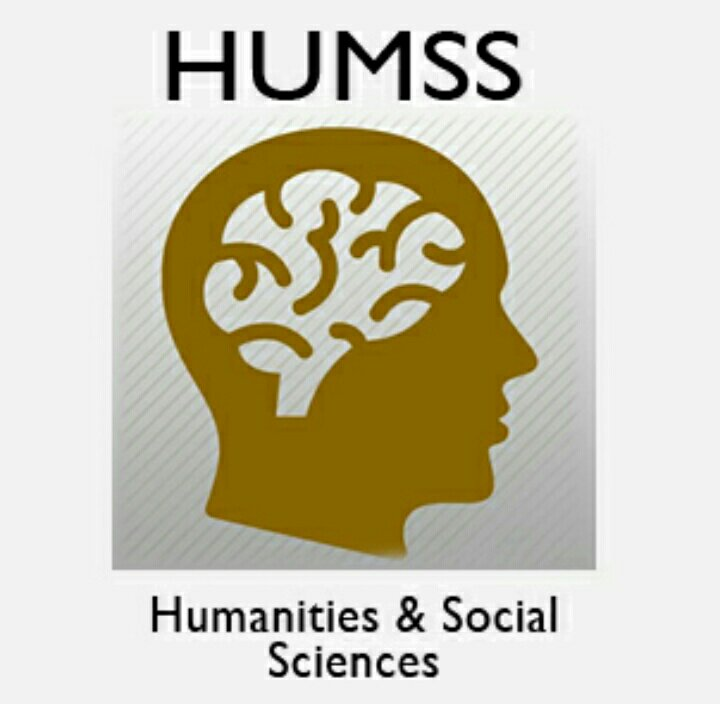
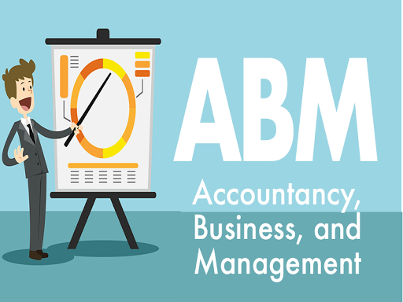
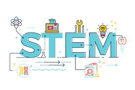
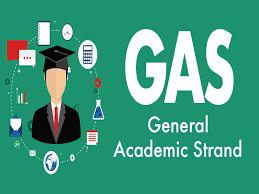

TVL

Technical-Vocational-Livelihood Strand
Technical-Vocational-Livelihood Strand
TVL Strand is designed to develop students' skills that is useful for livelihood and technical projects.
It provides a curriculum that is a combination of Core Courses
and specialized hands-on courses that meets the competency-based assessment of TESDA.
HUMSS

Humanities and Social Sciences
The Humanities and Social Sciences (HUMSS) strands equip students with a wide range of discipline with the
use of their experiences and skills into the investigation and inquiry of human situations by studying its behavior and social changes using empirical,
analytical, and critical method techniques.
ABM

Accountancy, Business, and Management Strand
The Accountancy, Business, and Management Strand—or ABM strand—seeks to prepare the young business leaders of tomorrow.
ABM strand paves the way for business-related college degrees.
It teaches the basic concepts of financial management, accounting, and corporate operations.
STEM

Science,Technology,Engineering,and Mathematics
STEM stands for Science, Technology, Engineering, and Mathematics strand.
Through the STEM strand, senior high school students are exposed to complex mathematical and science
theories and concepts which will serve as a foundation for their college courses.
GAS

General Academic Strand
General Academic Strand (GAS)
General Academic Strand caters students who are not yet sure
of what course or degree they want to take in college.
This strand was designed so that indecisive learners can proceed with any college program.